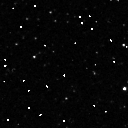
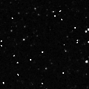
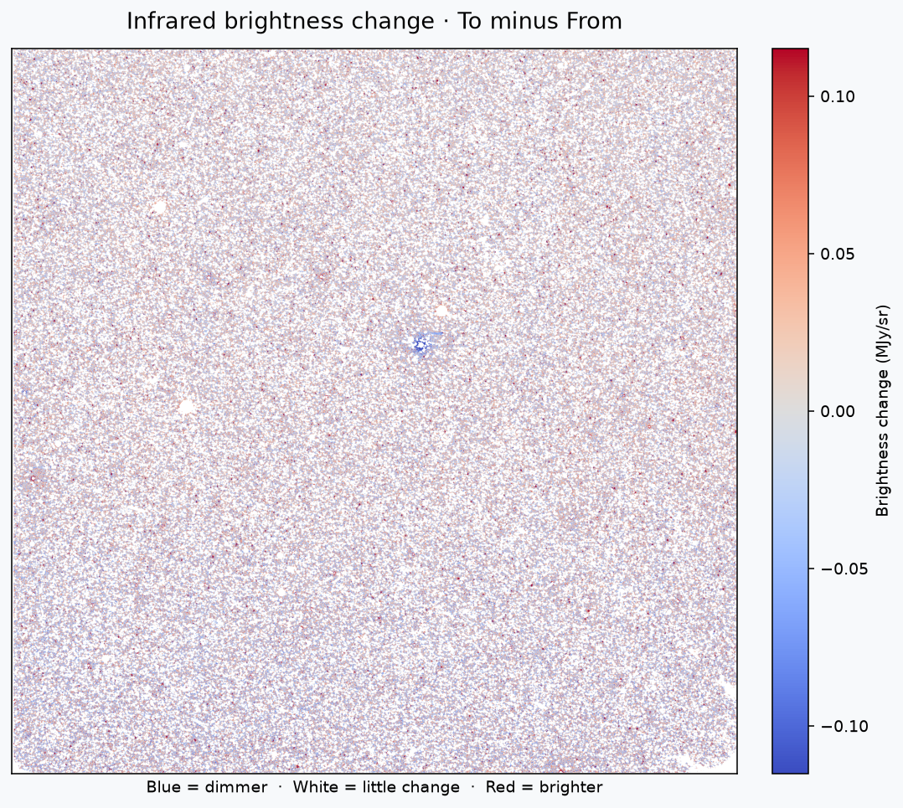
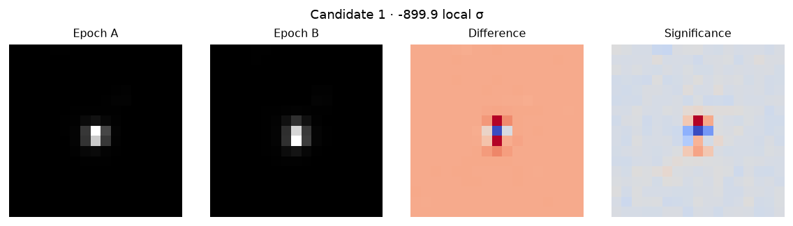
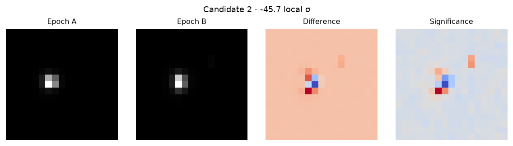
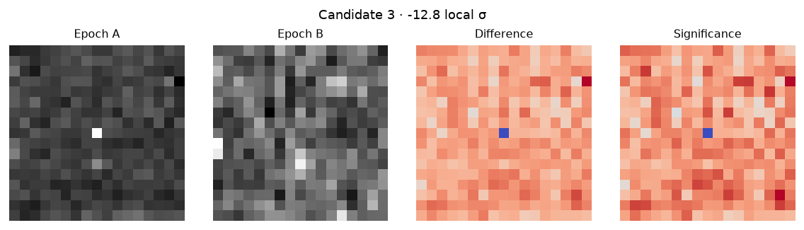

NASA SPHEREx · Hackathon prototype
Sky Time-Lapse Viewer
Explore the SPHEREx infrared sky, then open the prepared offline comparison of meaningful changes through time.
Step 1
Select a sky position
Scroll to zoom · drag to move · click to explore
The normal view is a continuous 360° Aitoff map. The packaged overview is used only if Aladin or WebGL cannot load.
Step 2
Choose the comparison
Prepared offline datasetThe live search and editable parameters require the dynamic Flask application and are locked here.
Two selected observations
Sky time-lapse



Selected position
RA 133.805°
Dec −8.770°
Two released D5 observations, aligned on the same celestial grid and displayed with a shared brightness scale.
Spectral detectorD5
Time baseline373 days
Frame coverage99.8%
Scientific validation
What changed between the two dates?
ReliabilityUsable with caution
This is an infrared brightness-change map, not a physical temperature map. Blue means dimmer, white means little measured change and red means brighter in the second observation.

Blue Dimmer
White Little change
Red Brighter
Technical comparison
WCS aligned · wavelength matched · PSF matched · background corrected · noise calibrated

Candidate review
Three residuals worth inspecting
These are screening results, not confirmed objects. All three carry artifact warnings and require independent follow-up.

#1 · faded or disappearedRA 135.18601° · Dec −9.93616°Bright-source residual

#2 · faded or disappearedRA 132.38724° · Dec −9.65165°Bright-source residual

#3 · faded or disappearedRA 132.33716° · Dec −7.88683°Single-pixel residual
This hackathon analysis is designed for transparent exploration and presentation. A credible discovery requires repeat detections, catalogue cross-matching, multi-epoch photometry and independent confirmation.